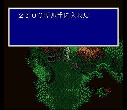

무아의 대삼림
숲에 오면 장로의 가지가 길을 열어줍니다. 숲은 몇 개의 영역으로 나뉘어 있는데 구멍이 있는 나무의 구멍을 조사하면 길이 열립니다. 숲에 가려서 지나치기 쉬운 상자들을 주의하시고.. 여기 나오는 애들 중에 쬐끄마한 몬스터 미니위저드에게 작은 멜로디를 배울 수 있습니다. 가쥬라가쥬리라고 잘 안맞는 놈은 에어로를 날려 주시면 간편합니다.
조금 나아가다 보면 엑스데스에 의해 화재가 일어납니다. 화재가 난 상황에서 가다 보면 나무와 덤불 사이에 보물상자가 있고, 모그리가 화재를 피할 구멍을 만들어 놓습니다. 이 때 이 상자를, 불이 난 상황에서 열면 이지스의 방패가, 구멍 안으로 들어갔다가 화재가 끝난 후 나와서 열면 플레임실드가 나오니 잘 생각해서 선택하세요.
.jpg)
계속 가다 보면 큰 나무가 있는데 바로 장로의 나무입니다. 들어가면 웬 물체들이 습격을 합니다. 전투상황에서 이름이 안 나와 그 정체를 모르고 싸우게 됩니다. 똑같이 생긴 물체가 4개가 대적하는데 앞은 물, 위는 불, 아래는 땅, 뒤는 바람속성을 가지고 있습니다. 그 중 뒤에 있는 물체는 에어로가를 쓰니 배워두세요. 이 녀석들은 매번 반격을 하니 전체공격은 자제하시고 각개격파를 합시다. 레비테트와 고렘을 잘 활용하세요. 확률이 좀 낮으나 데스크로도 걸립니다.
물리치면 이들은 다름아닌 크리스탈, 봉인을 지키는 자였습니다. 완전부활이 가능하게 된 엑스데스가 일행을 마구 공격합니다. 이 때 발 성에 있던 쿠루루는 불길한 느낌을 받고 서둘러 비룡을 타고 숲으로 옵니다. 도착한 쿠루루가 엑스데스에게 일격을 날리지만 엑스데스는 곧 정신을 차리고 쿠루루를 공격하여 죽을 위기에 처합니다.
이 때 쓰러져 있던 일행 중에서 가라프가 혼연히 일어나 홀로 엑스데스에
대항합니다. 턱없이 무모한 싸움이지만 가라프는 체력이 0이 되어도 죽지 않으니
마음껏 공격하세요. (이것이 제자의 한이다!)
가라프의 죽음을 무릅쓴
사투로 겨우 엑스데스를 패퇴시키지만, 완전히 기력이 쇠진한 가라프는 일행의 온갖
수단에도 (이 때 실제로 아이템이나 MP가 소모되는지는 확인하지 못했음) 소용없이
죽고 맙니다.
FF5 스토리의 최절정부로 꼽는 부분입니다. 잠시 묵념..
장로의 나무를 나오면 가라프의 영혼이 쿠루루에게 자신의 모든 능력을 전수합니다. 가라프의 경험치와 ABP는 물론, 장비까지도 모두 쿠루루에게 옮겨옵니다. 쿠루루는 눈물을 닦고, 씩씩하게 엑스데스성으로 진군할 것을 제안합니다.